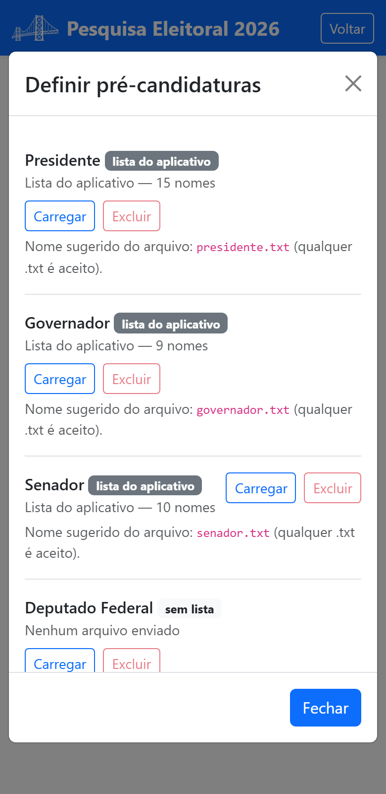

Parte 3 — Modo de operação
10. Configurar o questionário
Em Configurar questionário da pesquisa você ajusta o questionário que os entrevistadores vão aplicar. Duas possibilidades: remover seções inteiras e inserir listas de pré-candidaturas.

10.1 Remover seções
Toque em Remover seções da pesquisa. Mantenha marcadas as seções que deseja manter e desmarque as que quer remover; o aplicativo mostra as perguntas de cada seção para ajudar na decisão. Toque em Salvar.
10.2 Definir pré-candidaturas
Toque em Definir pré-candidaturas para carregar as listas de pré-candidatos que aparecerão como opções de resposta.

A tela mostra uma linha para cada cargo
— Presidente, Governador, Senador, Deputado Federal e Deputado Estadual ou Distrital — com o
que está valendo hoje em cada um. Cada lista é um arquivo de texto (.txt) com
um nome por linha.
O cargo é definido pela linha em que você carrega o arquivo, e não pelo nome
dele: qualquer .txt serve. Os nomes abaixo continuam sendo uma boa sugestão, para
você se organizar:
presidente.txt— pré-candidatos(as) a Presidente da República;governador.txt— pré-candidatos(as) a Governador(a);senador.txt— pré-candidatos(as) a Senador(a);federal.txt— pré-candidatos(as) a Deputado(a) Federal;estadual.txt— pré-candidatos(as) a Deputado(a) Estadual ou Distrital.
Em cada cargo você pode:
- Carregar (ou Substituir, se já houver arquivo);
- Ver os nomes lidos — confira antes de autorizar o início, para não descobrir um erro de digitação só durante a entrevista;
- Excluir a lista, com confirmação.
Não é obrigatório enviar arquivo para todos os cargos. A lista de Presidente já vem disponibilizada pelo aplicativo: se você excluir a sua, ela volta a valer — esse cargo nunca fica sem lista.
Atenção ao número de nomes: com dois ou mais, a questão apresenta a lista de opções ao entrevistado; com menos de dois, ela vira campo de texto livre, e a resposta passa a ser digitada.
10.3 Quando as mudanças passam a valer
Você não precisa “aplicar” nada: o aplicativo guarda a configuração à medida que você a registra, e ela é incorporada ao questionário no momento em que você toca em Autorizar início da pesquisa (§11).
Por isso você pode voltar aqui quantas vezes quiser antes de autorizar: trocar um arquivo, carregar o de outro cargo, remarcar uma seção. Nada fica pela metade e não há aviso de “alterações pendentes” para administrar.
É sua responsabilidade conferir, antes de autorizar o início, que o questionário configurado corresponde exatamente ao que você pretende registrar na Justiça Eleitoral.